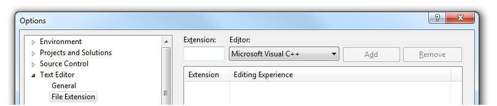

Changes for Visual Studio
Make version-specific changes to your IDE as well:
Visual Studio 2010 or newer
Add your extension to:
Tools | Options | Text Editor | File Extension | Microsoft Visual C++

Also add your extension to:
Tools | Options | Projects and Solutions | VC++ Project Settings | Extensions To Include
Visual Studio 2008 and 2005
Add your extension to:
Tools | Options | Text Editor | File Extension | Microsoft Visual C++

Also add your extension to:
Tools | Options | Projects and Solutions | VC++ Project Settings | C/C++ File Extensions